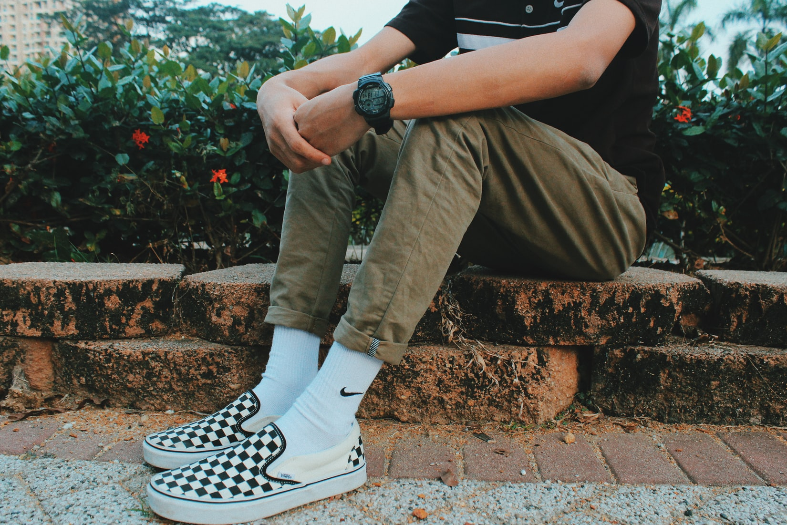
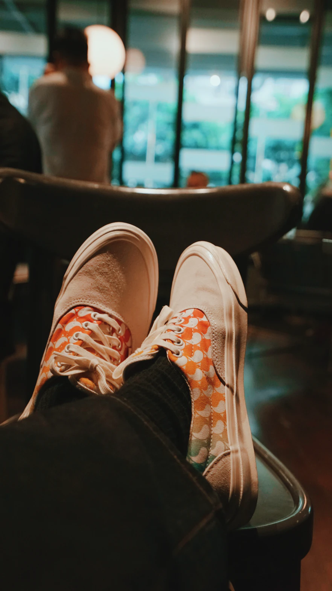
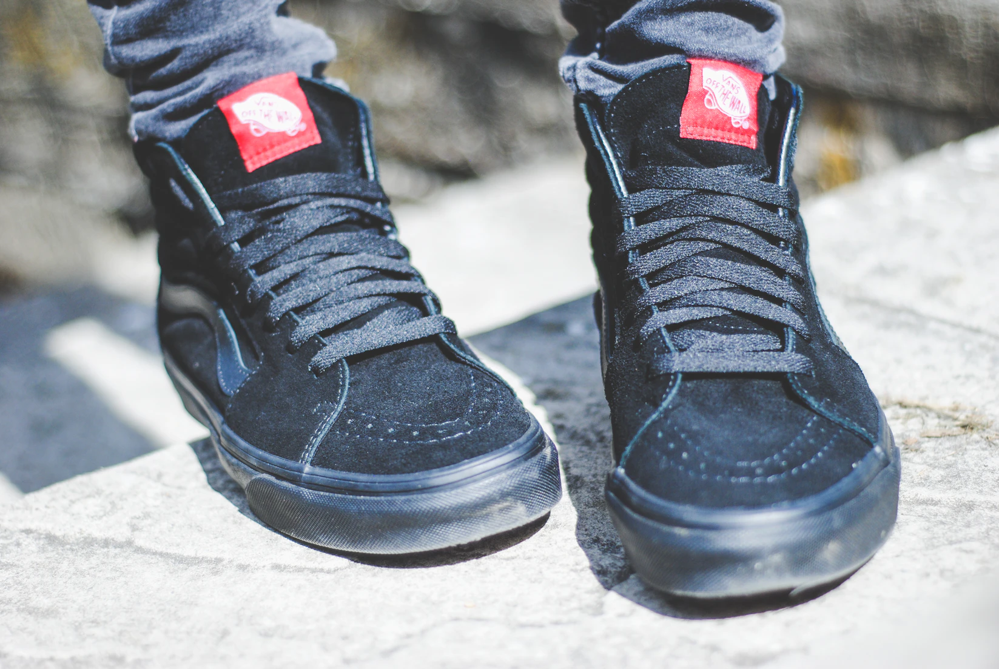

AUTHENTIC(어센틱)
1966년 반스와 함께 처음 선보인 모델입니다. 내구성이 뛰어난 컨버스와 고무 와플 아웃솔로 당시 스케이터의 마음을 사로잡은 어센틱은 지금까지 많은 사랑을 받고 있습니다.

SLIP-ON(슬립온)
스케이터와 BMX 라이더를 위해 탄생한 스타일입니다. 캘리포니아 특유의 레이드-백 스타일을 대변하는 아이코닉한 실루엣으로 자리매김했습니다.

ERA(에라)
스케이터에 의해 디자인된 최초의 스케이트 슈즈로 1976년 처음 선보인 에라는 스케이터와 서퍼 뿐만 아니라 전세계의 창의적인 이들의 선택을 받고 있습니다.
OLD SKOOL(올드스쿨)
1977년 탄생한 올드스쿨은 반스의 심볼 '사이드스트라이프' 가 적용된 최초의 슈즈로 시대가 지나도 변함없이 사랑받는 올드스쿨은 내구성이 뛰어난 가죽 소재가 사용되면서 90년대 스케이터들의 많은 사랑을 받았습니다.

SK8-HI(스케이트-하이)
1978년에 발매된 스케이트-하이 모델로, 하이-탑 실루엣을 가진 최초의 스케이트 보드 슈즈입니다. 발목을 보호해 줄 뿐만 아니라 오늘날 오프-더-윌 문화를 상징하는 스타일로 자리잡았습니다.